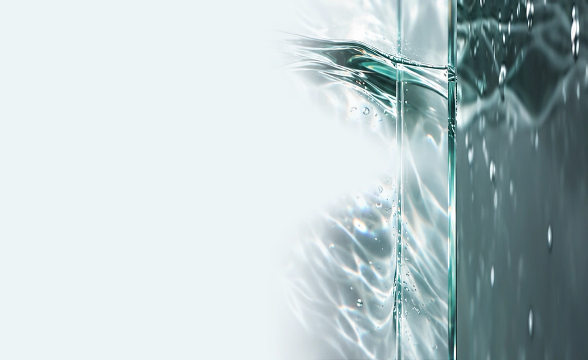
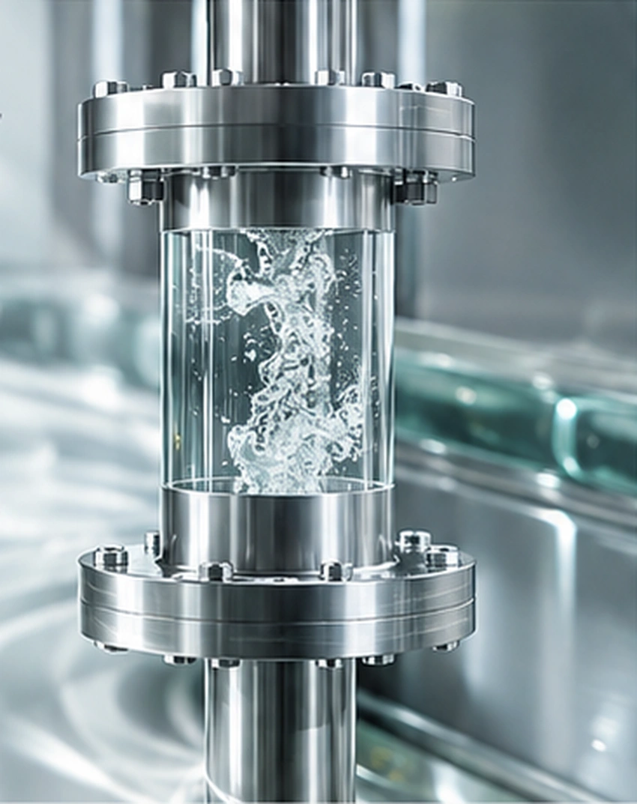

PRODUCTS & RESOURCES
以资料连接
技术与现场
了解技术形态、工艺方向，以及实验评价需要关注的条件。

ENGINEERING DEVELOPMENT
演示样机
旋风流体已完成可正常运行的演示样机，并开展实验对比。样机用于研究核心技术、介质处理与运行条件。
本页已提供空化科普、样机运行与仿真可视化、反应概念影像。更多设备参数与实验报告将在公开确认后补充。
了解悬浮空化技术
PRODUCTS & RESOURCES
了解技术形态、工艺方向，以及实验评价需要关注的条件。

ENGINEERING DEVELOPMENT
旋风流体已完成可正常运行的演示样机，并开展实验对比。样机用于研究核心技术、介质处理与运行条件。
本页已提供空化科普、样机运行与仿真可视化、反应概念影像。更多设备参数与实验报告将在公开确认后补充。
了解悬浮空化技术